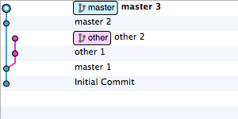

Gitでブランチを統合する方法
こういうコミットを重ねたブランチを、
どういう方法でmasterに統合すると嬉しい派なのか？っていう小ネタです。
マージする

git checkout master
git merge other -m "Merge branch 'other'"
git branch -d other
操作が分かりやすい感じがする。
リベースする

git checkout master
git rebase master other
git checkout master
git merge other
git branch -d other
コミットが一本化する。
リベースしてからマージする

git checkout master
git rebase master other
git checkout master
git merge other --no-ff -m "Merge branch 'other'"
git branch -d other
コミットが一本化しつつブランチ単位の作業を把握しやすい。
まとめ
私はリベースしてからマージする派！
おまけ
最初に提示したコミットを作るスクリプト。
#!/bin/sh
rm -fr .git *.txt .gitignore
git init
echo init.sh>.gitignore && git add .gitignore && git commit -m "Initial Commit"
echo b>b.txt && git add b.txt && git commit -m "master 1"
git branch other
echo c>c.txt && git add c.txt && git commit -m "master 2"
echo d>d.txt && git add d.txt && git commit -m "master 3"
git checkout other
echo e>e.txt && git add e.txt && git commit -m "other 1"
echo f>f.txt && git add f.txt && git commit -m "other 2"
git checkout master
libGDXプロジェクトをセットアップする #libgdx
libGDXはJavaのゲームフレームワークで、デスクトップ・Android・iOS・HTML5用にビルドできるフレームワークです。 どのプラットフォームであっても起動用のクラス以外のほとんどのコードを共有できるすごいやつです。
今回はlibGDXを使ったプロジェクトのセットアップ方法を書いていこうと思います。
セットアップツールによるプロジェクトの生成
ダウンロードページ で “Download Setup App” をクリックして gdx-seup.jar をダウンロードしてください。
ダウンロードできたらダブルクリック、もしくは次のコマンドで実行してください。
java -jar gdx-setup.jar
各項目を編集します。
| Name | プロジェクトの名前。Androidプロジェクトはres/values/string.xmlのapp_nameにも使用される。 |
| Package | 出力されるサンプルコードのパッケージ。AndroidManifest.xmlに書かれるpackageにも使用される。 |
| Game class | ApplicationListener 実装クラス。libGDXにおける起点となるクラス。 |
| Destination | プロジェクトの出力先ディレクトリ。 |
| Android SDK | Android SDKのパス。Android用のビルドをする場合に必要。 |
“LibGDX Version” は最新のものが選択されているはずなので、そのままで。
“Sub Projects” はすべてチェックされていると思います。 不要になればその時点で取り除けば良いし個別にビルドもできるので、これもそのままで。
“Extensions” は “Box2d” のみがチェックされていると思います。 ここについては詳しい解説が出来るほどの知識がありません。 誰か教えてください！ これもそのままでいきましょう。
以上の状態で “Generate” を押してください。
初回はGradleや依存JARのダウンロードが行われるので時間がかかります。 お茶でも飲んでお待ちください。
次のようなログが出ると完了です。
BUILD SUCCESSFUL
Total time: 42.551 secs
Done!
To import in Eclipse: File -> Import -> Gradle -> Gradle Project
To import to Intellij IDEA: File -> Import -> build.gradle
To import to NetBeans: File -> Open Project...
寄り道：Gitでバージョン管理を始める
今後の事を考えてGitでのバージョン管理を始めておきましょう。
セットアップツールが .gitignore も出力してくれているのでややこしいことは何も考えずにバージョン管理を始められます。
git init
git add .
git commit -m "Initial commit"
Eclipseへのインポート
セットアップのログを見た感じだとEclipseにGradleプラグインが入っているとそのままインポート出来そうですね。
私はGradleプラグインが入っていないEclipseを使っているので、その場合のインポート方法を書きます。
まずGradleでコマンドを実行します。
gradlew eclipse
次にEclipseのメニューから を選択します。 それから “Select root directory” にプロジェクトのパスを入力してください。
Note
プロジェクトのパスをコピーするときはMacなら次のコマンドを使うとクリップボードに格納されて便利です。
pwd|pbcopy
Windowsなら次のコマンドで同じ事ができます。
cd|clip
インポートするプロジェクトは code と desktop だけで良いでしょう。 基本的にはデスクトップで開発してたまに実機確認という感じで進められると思います。
インポートできたら（これが面倒なのですが）desktopプロジェクトにあるassetsディレクトリをクラスパスに加えてください。
手っ取り早い方法はassetsディレクトリで右クリックして です。
もしくは、プロジェクトのプロパティを開いて と辿って “Add Class Folder” を押してassetsディレクトリを指定してください。
IntelliJ IDEAへのインポート
私はIntelliJ IDEA分からんのですが、セットアップのログに書かれているように をやってみたところインポートできたっぽいです。
実行する
desktopプロジェクトの src/main/java/yourpackage/DesktopLauncher.java を実行してください。 ( yourpackage はセットアップ時に設定したパッケージです。 適宜読み替えてください。)
結び
というわけでlibGDXプロジェクトのセットアップ方法を記載してみました。
libGDXはAndroidアプリであってもデスクトップ中心で開発でき、 コードの殆どを共有できるのがすごくて嬉しくてお気に入りです。
願わくばもっともっとlibGDXユーザーが増えますように！